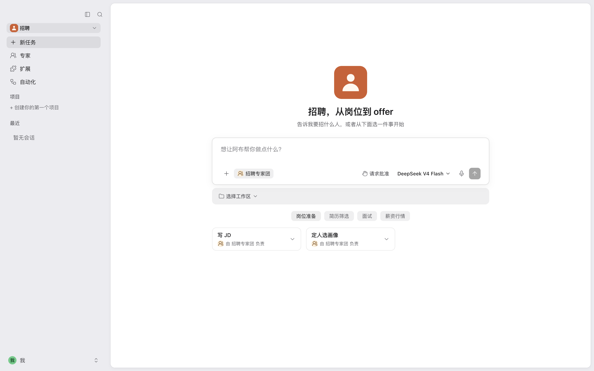
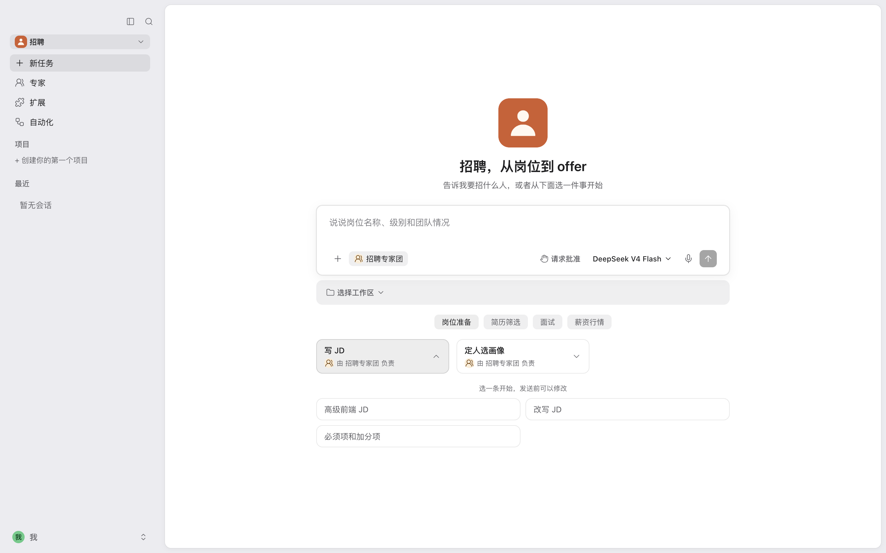
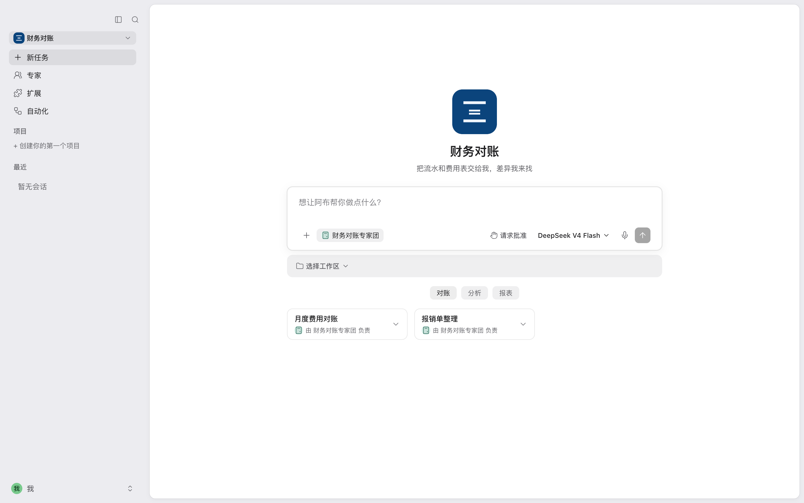
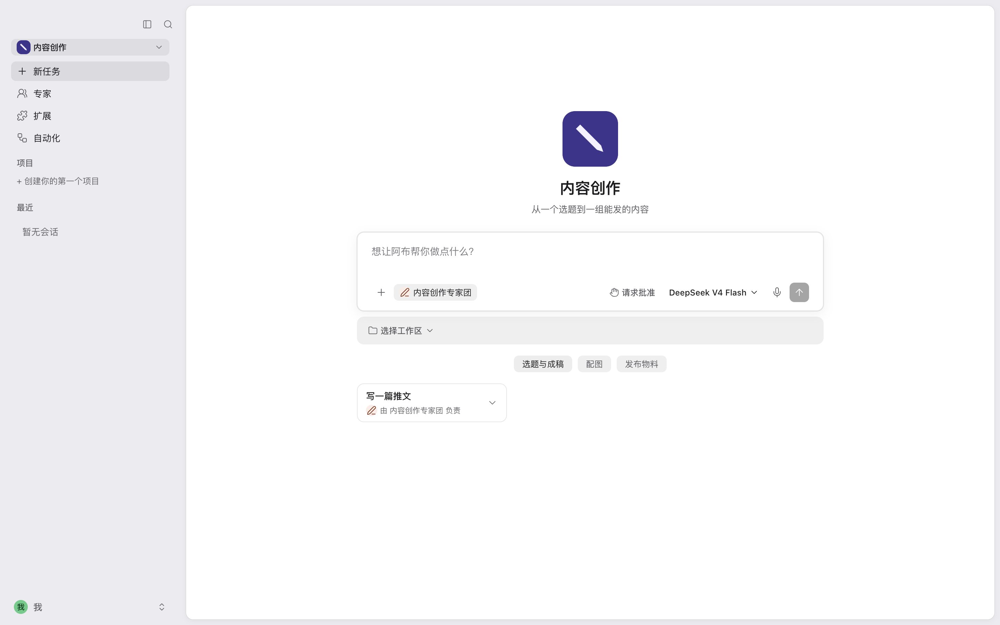
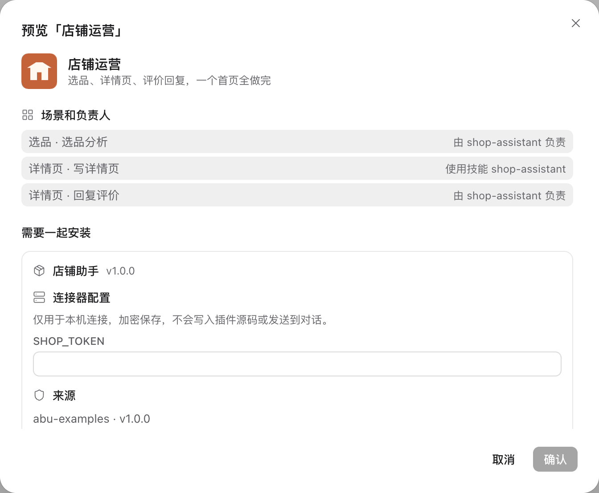
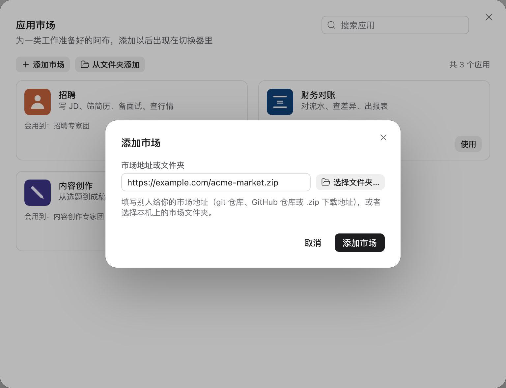
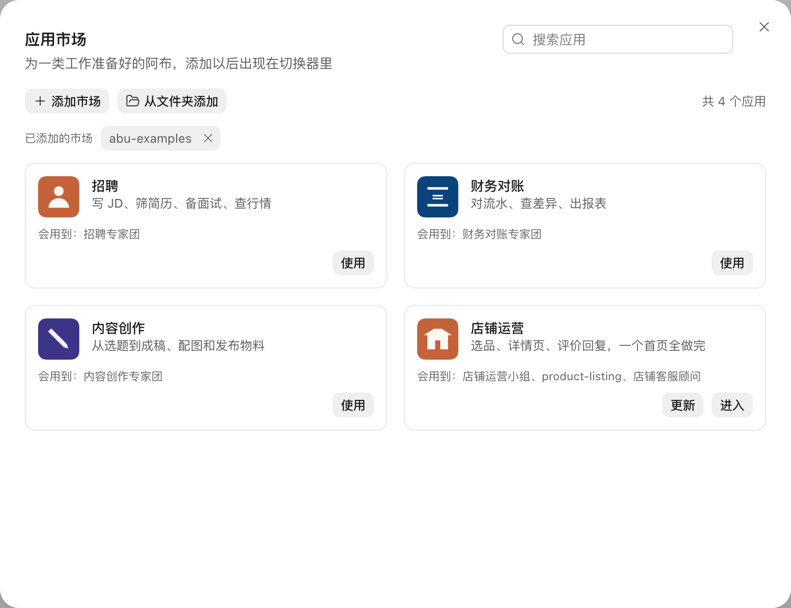

招聘
写 JD、筛简历、备面试、查行情
写 JD简历排序评估表与记录
你写一个应用目录，客户的阿布里就多出一套为这类工作准备好的首页、场景和专家团。
里面是一份应用文件和几张图片，写明首页、场景和每个场景交给谁。
对话、权限确认、读写文件、交付文件，应用直接使用阿布已有的这些能力。
客户点「使用」，应用出现在应用切换器里，缺少的插件在添加应用时一起安装。
一个 git 仓库或者一个 zip 地址。新版本发布后，客户那边显示「更新」。
应用是为一类工作准备好的阿布。下面是随阿布附带的「招聘」应用，图上标出了这张画面里有的五处；「招聘」没有用到单独的专家、技能和应用网页，画面里没有它们。

应用打开后的第一个画面，写着应用的名称和一句话。
首页上的一件事，例如「写 JD」。每个场景带 3 到 6 条示例问题（图上的 3），用户点一条，文字就填进输入框。
一个场景可以交给专家团，由几位专家分工完成。「招聘」的场景都交给招聘专家团，场景卡片上写着「由 招聘专家团 负责」。
一个场景也可以交给一位专家。
一个场景还可以交给一项技能。专家团、专家、技能都装在插件里，应用只写明用到哪些。
左侧的菜单按应用的定义显示。
客户已有的网页可以放进导航，在阿布的主区域打开。
这三个应用随阿布一起安装，应用文件都在仓库的官方市场目录里，可以照着写。

写 JD、筛简历、备面试、查行情

对流水、查差异、出报表

从选题到成稿、配图和发布物料
目录里是一份应用文件 app.json 和几张图片。想先试一个想法，可以在阿布里点「创建应用」，用对话做一个只留在这台电脑上的应用。
{
"name": "recruiting",
"version": "1.0.0",
"interface": {
"displayName": "招聘",
"shortDescription": "写 JD、筛简历、备面试、查行情"
},
"defaultRun": { "team": "builtin-team:recruiting" },
"home": {
"modes": { "items": [ {
"title": { "zh-CN": "岗位准备" },
"scenes": [ {
"title": { "zh-CN": "写 JD" },
"templates": [
{ "title": { "zh-CN": "高级前端 JD" }, "prompt": { … } },
…
]
} ]
} ] }
}
}在应用市场点「从文件夹添加」，选中应用目录。确认页列出每个场景交给谁、需要一起安装的插件和要填写的连接器配置。应用文件写错了，错误信息给出那个字段的完整路径。

把市场目录放进 git 仓库，或者打成 zip 放在能下载的地址上。客户在应用市场点「添加市场」填入地址，找到应用点「使用」。

你更新仓库或者压缩包。客户打开应用市场，应用旁边显示「更新」，步骤和第一次点「使用」相同。

连接器装在插件里。应用写明需要哪些连接器，客户还没有连接时，首页顶部提示「去连接」。
把网址写进导航，网页在阿布的主区域打开。它只能停留在应用声明的网站上，跳到别处的链接由系统浏览器打开。